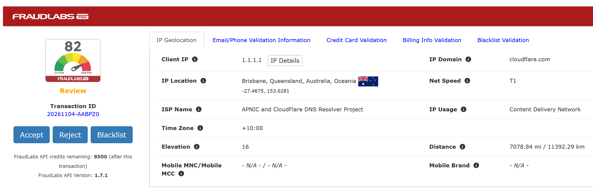

This plugin screens the online transactions, especially the credit card orders, for potential fraud. It helps the users to minimize their risk in accepting fraudulent orders, while allowing legitimate users to continue enjoy their shopping experience, without erroneously rejected the valid order.
This plugin returns user a fraud indicator and comprehensive validation results for an online order, so that store owners can make the right decision if to proceed or reject an order. Furthermore, it also enables store owners to customize the validation logic by defining their own fraud checking rules based on their business needs. Inevitably, this solution helps to minimize fraud and chargebacks losses and improve business profits.
Find out more information at https://www.fraudlabspro.com. You can sign up a free account at https://www.fraudlabspro.com/sign-up to start using this awesome feature. (There are paid options that provide more options and higher API limits within the FraudLabs Pro API, however, you do NOT need to sign up for them and this program will operate the same.)

Please take note that the "server" in this readme means the location where you install the ZenCart and that the *admin* folder refers to the ZenCart admin folder which was renamed during the ZenCart installation.
This solution requires ZenCart 2.0 or later and PHP 8. It has been tested on ZenCart 2.0.1, 2.1.0 and 2.2.x. Backwards compatibility with earlier ZenCart versions and earlier PHP versions is not guaranteed.
IMPORTANT: Please BACKUP the ZenCart source files in your server before proceed with the below upgrade!
zc_plugins/FraudLabsPro/<version>/.orders_fraudlabspro table and the configuration settings automatically. No SQL patch and no core-file edit are required.IP Override (testing) - enter an IPv4 or IPv6 address to send that address to FraudLabs Pro instead of the visitor's actual IP. The real address is still stored with the order. Leave this empty in production; it is only meant for testing and debugging.
Earlier releases were installed by copying files into includes/ and the admin folder. Remove those files before installing the plugin, otherwise they will also be loaded:
includes/classes/fraudlabspro/includes/classes/observers/auto.fraudlabspro_process.phpincludes/extra_datafiles/flp_orders.phpincludes/modules/fraudlabspro/ (the old fraudlabspro.php)includes/modules/pages/checkout_process/header_php.php (restore the original ZenCart file, which removes the require(DIR_WS_MODULES . 'fraudlabspro/fraudlabspro.php') line)includes/modules/pages/checkout_confirmation/jscript_fraudlabspro.php/includes/classes/observers/auto.fraudlabspro_admin_order.php/includes/classes/observers/auto.fraudlabspro_order_delete.php/includes/classes/observers/auto.zcObserverFraudlabsProOrderDelete.php (only present in 1.5.x packages)/includes/extra_datafiles/flp_orders.php/includes/languages/english/extra_definitions/lang.fraudlabspro.php/includes/modules/fraudlabspro/include(DIR_WS_MODULES . 'fraudlabspro/summary.php') line from admin/orders.php if an earlier version added it.Your existing results are kept. The installer detects the previous table and upgrades its columns to the current schema. If you are coming from 1.4.x, run alter_flp_orders.sql once with Tools -> Install SQL Patches before installing the plugin.
The root-level SQL files are only needed for manual installs: flp_orders.sql creates the table and settings, and alter_flp_orders.sql is only needed when upgrading from 1.4.x before installing the plugin.